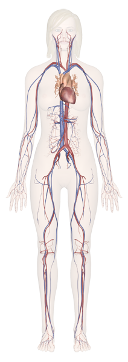

The Heart
The heart is a muscular pumping organ located medial to the lungs along the body’s midline in the thoracic region. The bottom tip of the heart, known as its apex, is turned to the left, so that about 2/3 of the heart is located on the body’s left side with the other 1/3 on right. The top of the heart, known as the heart’s base, connects to the great blood vessels of the body: the aorta, vena cava, pulmonary trunk, and pulmonary veins
Blood Vessels
There are three major types of blood vessels: arteries, capillaries and veins. Blood vessels are often named after either the region of the body through which they carry blood or for nearby structures. For example, the brachiocephalic artery carries blood into the brachial (arm) and cephalic (head) regions. One of its branches, the subclavian artery, runs under the clavicle; hence the name subclavian. The subclavian artery runs into the axillary region where it becomes known as the axillary artery.
Circulatory Loops
There are 2 primary circulatory loops in the human body: the pulmonary circulation loop and the systemic circulation loop.
Pulmonary circulation transports deoxygenated blood from the right side of the heart to the lungs, where the blood picks up oxygen and returns to the left side of the heart. The pumping chambers of the heart that support the pulmonary circulation loop are the right atrium and right ventricle.
Systemic circulation carries highly oxygenated blood from the left side of the heart to all of the tissues of the body (with the exception of the heart and lungs). Systemic circulation removes wastes from body tissues and returns deoxygenated blood to the right side of the heart. The left atrium and left ventricle of the heart are the pumping chambers for the systemic circulation loop